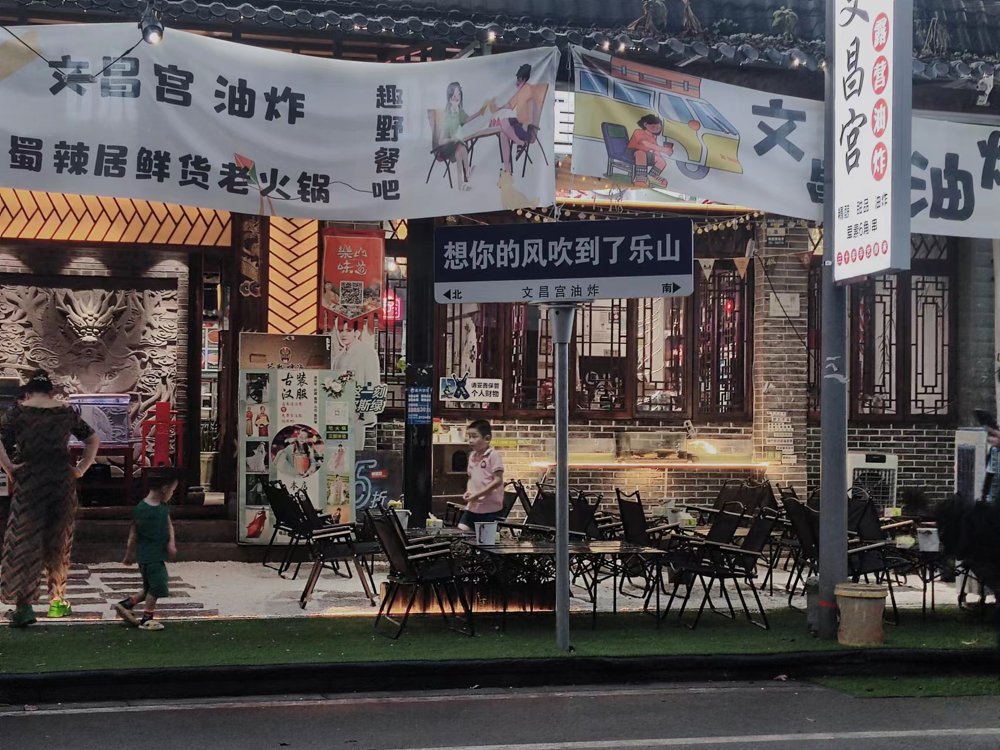
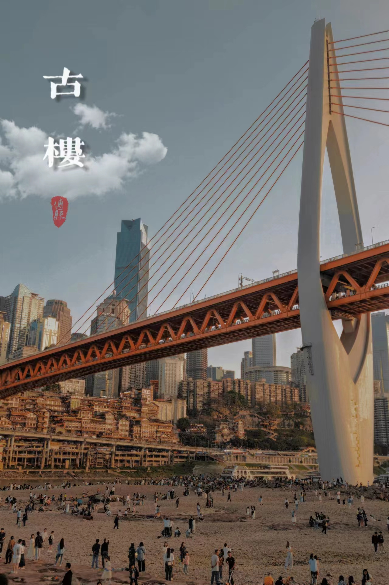
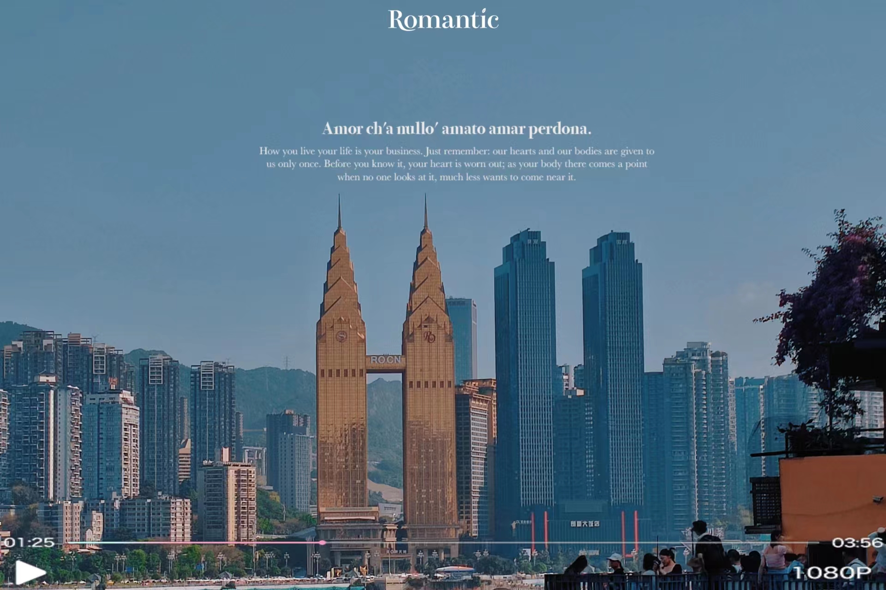

我有许多兴趣爱好，但最喜欢，最爱的是各地旅行看风景，品美食，旅行的意义大概就是：看广茂天地 ，看芸芸众生 ，观内心自在让生命的流逝不再惊慌失措 ，更好的懂得爱和珍惜， 接纳自己也包容众生。
张嘉佳在《从你的全世界路过》中讲就算过几天就得回去，依旧上班，依旧吵闹，依旧心烦，可是我对世界有了新的看法,就算什么改变都没有发生，至少，人生就像一本书，我的这本也比别人多了几张彩页。 “人活着无非就是为了这么几个瞬间”，“旅行是找不同,旅行是找美好,旅行是找自己”，青春没有售价, 旅游就在当下，见天地， 见当下，见自己。
